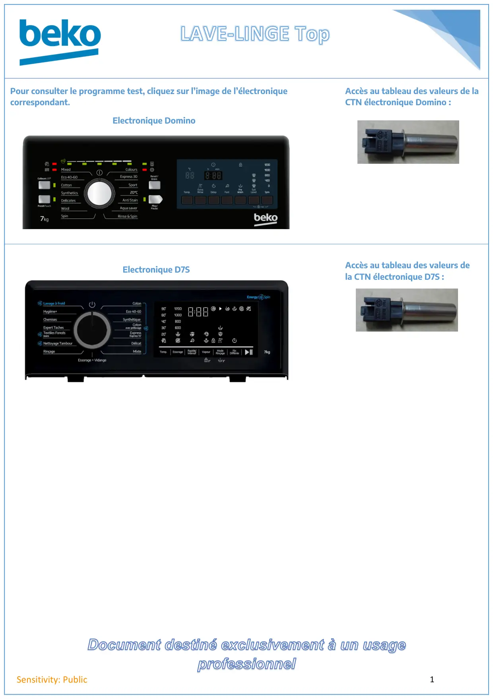

Accueil lave linge Top

Document destiné exclusivement à un usageprofessionnel1Sensitivity: PublicPour consulter le programme test, cliquez sur l’image de l’électroniquecorrespondant.Accès au tableau des valeurs de laCTN électronique Domino :Electronique DominoElectronique D7SAccès au tableau des valeurs dela CTN électronique D7S :
1 / 1